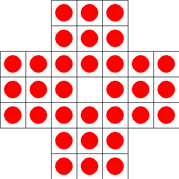

AI Peg Solitaire

This project is a part of Human-Robot Interaction course.
- Implemented Deep-Q Networks to learn optimal strategies for various peg solitaire board configurations.
- Following a turn-based interaction model, develop a methodology for assisting human players for the game.